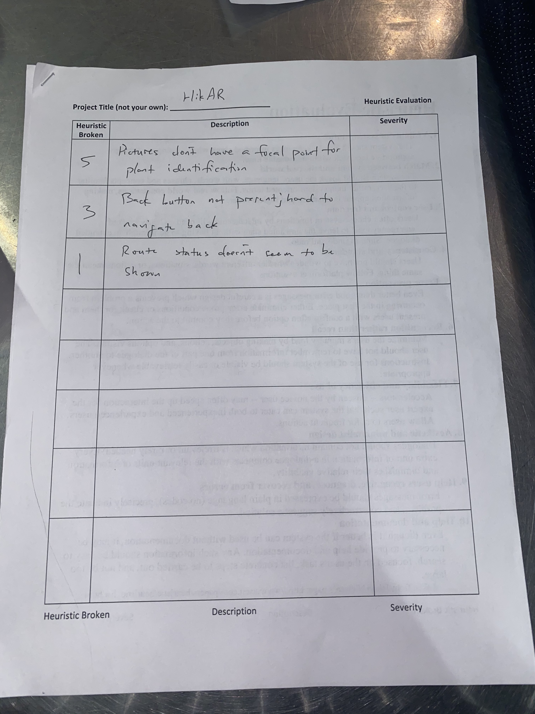
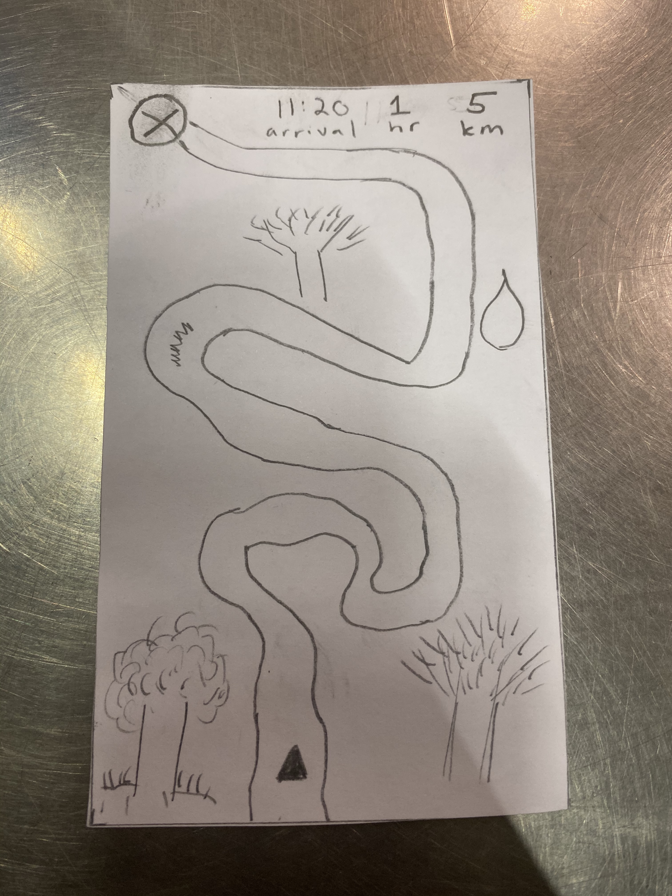
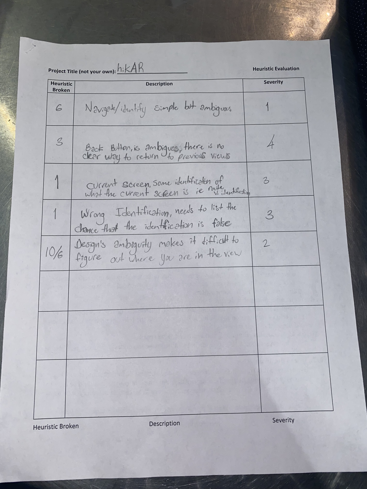
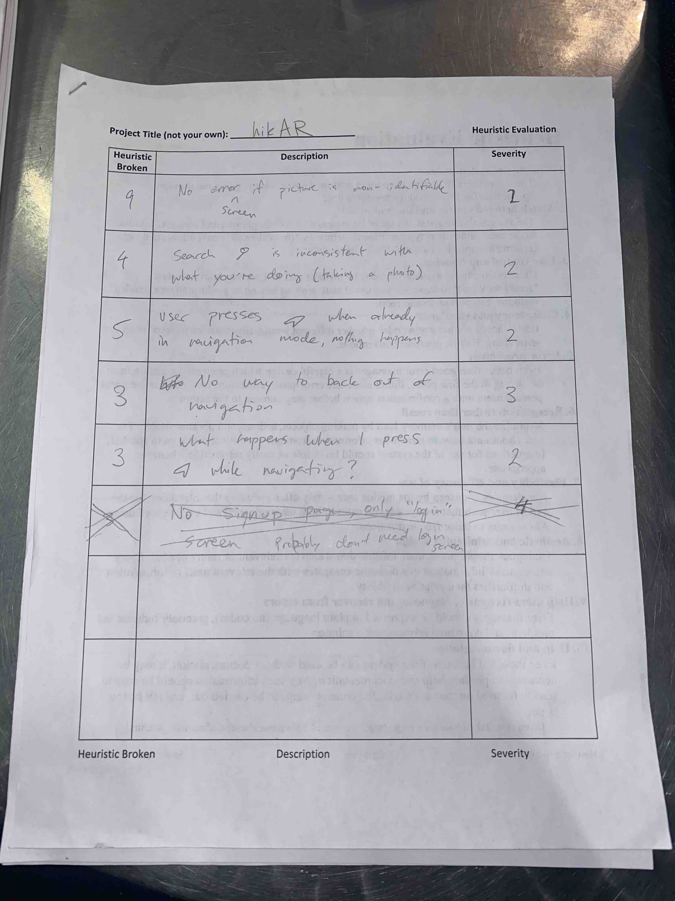
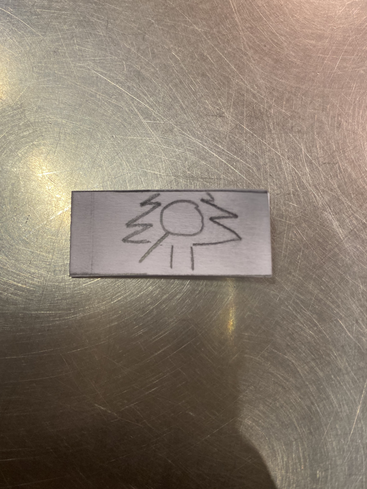
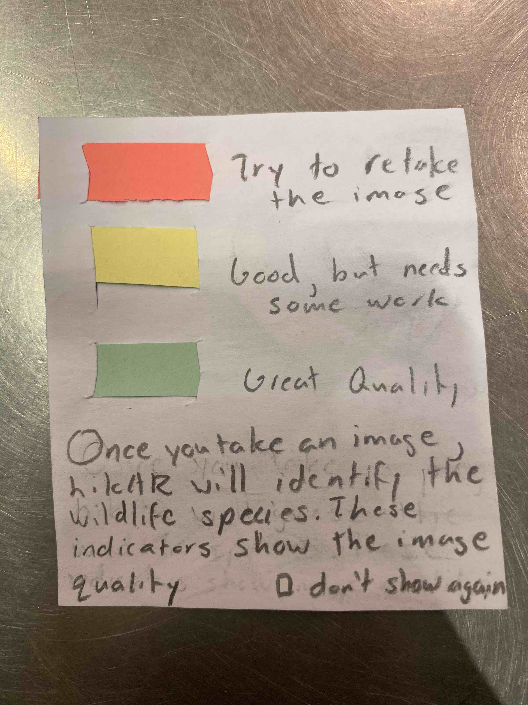
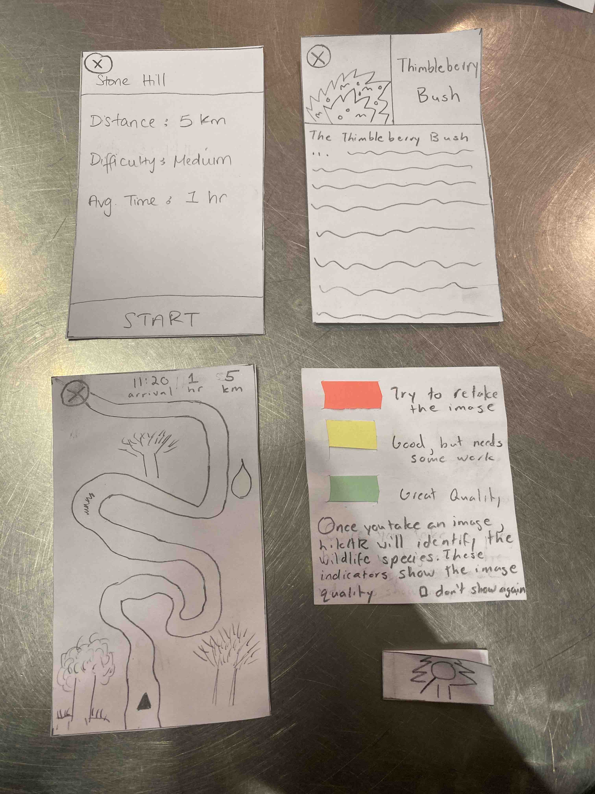

Heuristic Evaluation 1

hikAR: Gaurnett and Rudy RES: Gavin
| # | Heuristic Broken | Description | Severity |
|---|---|---|---|
| 5 | Error Prevention | Pictures don't have a focal point for plant identification | 1 |
| 3 | Control & Freedom | Back button is not present; hard to navigate back | 1 |
| 1 | Visibility | Route status doesn't seem to be shown | 1 |
 Route status allows the hikers to know their current progress in the hike
 Focal point within the camera screen to improve identification
Focal point within the camera screen to improve identification
Heuristic Evaluation 2
hikAR: Eric commUnity: Tahiem and Peter
 
| # | Heuristic Broken | Description | Severity |
|---|---|---|---|
| 6 | Recognition | Navigate/identify simple but ambigous | 1 |
| 3 | Control & Freedom | Back button is ambiguous, there is no clear way to return to previous view | 4 |
| 1 | Visibility | Current screen. Some identification of what the current screen is (i.e. route vs identification) | 3 |
| 1 | Visibility | Wrong identification/Identification Error. Needs to list the chance that the identification is false | 3 |
| 10/6 | Help/Recognition | Design's ambiguity makes it difficult to figure out where you are in the view | 2 |
| 4 | Consistency | Search icon is inconsistent with what you're doing (taking a photo) | 2 |
| 5 | Error Prevention | User presses navigation button when already in navigation mode and nothing happens | 2 |
 Back button to allow easy navigation back and forth across the app
Back button to allow easy navigation back and forth across the app
 Single tab icon that is always on the bottom unless we are in image mode.
 Pop-up message when clicking the identification feature
Heuristic Revisions
Most of the revisions that needed to be made was based on the navigation around the app. There was no back button integrated and this caused navigating back from the current screen difficult to do. Another issue came from the icons. The identification icon was a bit ambiguous so we redesigned it to make it look better and more direct. We also changed the tab bar to include just one tab instead of two for simplicity. We had also improved the identification functionality to include a help/pop-up message for error indicators on image quality and a square to properly focus what is being identified on the app. Lastly, we updated the navigation view to include the current status of where our hiker currently is relative to their endpoint.
 Overview of our changes to the prototype